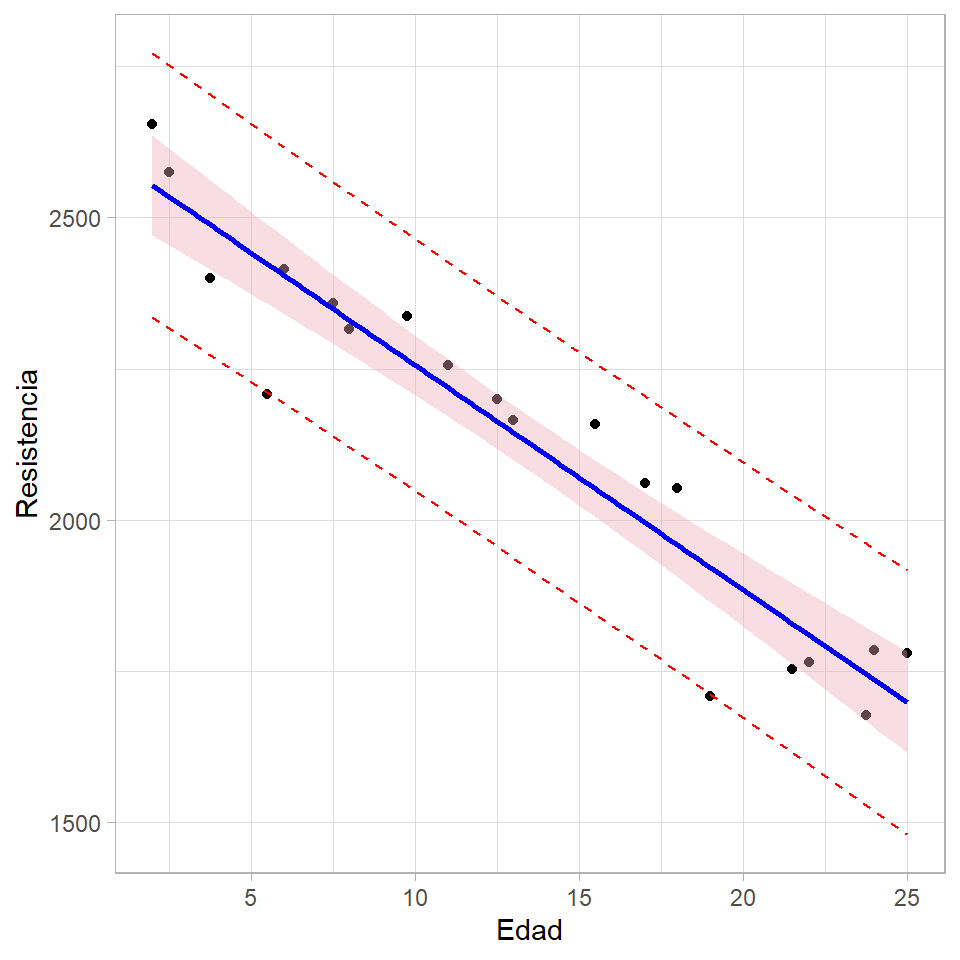

3 Predicción
En este capítulo se presenta una descripción breve de como realizar predicciones a partir de un modelo de regresión lineal.
Función predict
La función predict es una función genérica de clase S3 que se puede aplicar a un modelo ajustado para obtener los valores de \(\hat{y}\). Abajo se muestra la estructura de la función predict con la lista de sus argumentos.
predict.lm(object, newdata, se.fit = FALSE, scale = NULL, df = Inf,
interval = c("none", "confidence", "prediction"),
level = 0.95, type = c("response", "terms"),
terms = NULL, na.action = na.pass, pred.var = res.var/weights,
weights = 1, ...) Ejemplo
Suponga que queremos ajustar un modelo de regresión para explicar el número de trabajadores empleados (Employed) en función de las covariables Unemployed, Armed.Forces y Year del conjunto de datos longley. Luego de ajustar el modelo queremos predecir el valor de \(E(Employed|x=x_0)\) en dos situaciones:
- Año 1963 con 420 desempleados y 270 personas en fuerzas armadas.
- Año 1964 con 430 desempleados y 250 personas en fuerzas armadas.
Solución
Lo primero que se debe hacer es ajustar el modelo así.
mod <- lm(Employed ~ Unemployed + Armed.Forces + Year, data=longley)
library(broom)
tidy(mod, quick=TRUE)## # A tibble: 4 x 2
## term estimate
## <chr> <dbl>
## 1 (Intercept) -1797.
## 2 Unemployed -0.0147
## 3 Armed.Forces -0.00772
## 4 Year 0.956De la tabla anterior tenemos que el modelo ajustado es el siguiente:
\[ \widehat{\text{Employed}} = -1797.22 - 0.01(\text{Unemployed}) - 0.01(\text{Armed.Forces}) + 0.96(\text{Year}) \]
Podríamos usar la expresión anterior y reemplazar los valores de año, desempleados y personas en fuerzas armadas, dadas arriba, para calcular \(E(Employed|x=x_0)\). Sin embargo, aquí lo vamos a realizar usando la función predict.
Lo segundo que debemos hacer es construir un nuevo marco de datos con la información de las covariables, usando los mismos nombres y los mismos tipos de variables (cuali o cuanti) que en el conjunto de datos con el cual se entrenó el modelo.
## Year Unemployed Armed.Forces
## 1 1963 420 270
## 2 1964 430 250Ahora ya podemos usar la función predict para obtener lo solicitado.
## 1 2
## 71.89467 72.85853De la salida anterior tenemos los valores de \(\widehat{Employed}\).
¿Qué sucede si en el nuevo marco de datos anterior las variables se llaman diferente a las variables conjunto de datos de entrenamiento?
Intervalo de confianza para la respuesta media \(E(y|x_0)\)
En regresión lineal simple, Si \(\hat{\mu}_{y|x_0}\) es la media estimada para la variable respuesta cuando \(x=x_0\), entonces un IC del \((1−\alpha⁄2)\)×100% para \(E(y|x_0)\)_0) está dado por:
\[ \hat{\mu}_{y|x_0} \pm t_{\alpha / 2, n - p} \, \sqrt{MSE \left(\frac{1}{n} + \frac{(x_0 - \bar{x})^2}{\sum(x_i - \bar{x}^2)} \right)} \]
Intervalo de confianza para la predicción de nuevas observaciones
En regresión lineal simple, Si \(\hat{y}_0\) es el valor estimado para la variable respuesta cuando \(x=x_0\), entonces un IC del \((1−\alpha⁄2)\)×100% para \(y_0\)está dado por:
\[ \hat{y}_0 \pm t_{\alpha / 2, n - p} \, \sqrt{MSE \left(1 +\frac{1}{n} + \frac{(x_0 - \bar{x})^2}{\sum(x_i - \bar{x}^2)} \right)} \]
Ejemplo
Como ilustración vamos a usar los datos del ejemplo 2.1 del libro de Montgomery, Peck and Vining (2003). En el ejemplo 2.1 los autores ajustan un modelo de regresión lineal simple para explicar la Resistencia de una soldadura en función de la Edad de la soldadura.

El objetivo es obtener:
- IC del 95% para \(E(y|x_0)\) cuando \(x_0=\overline{Edad}=13.3625\) semanas.
- IC del 95% para \(\hat{y}_0\) cuando \(x_0=10\) semanas.
- Crear el histograma de dispersión agregando las líneas de los IC para \(E(y|x_0)\) y \(\hat{y}_0\).
Solución
Lo primero es disponer los datos.
file <- "https://raw.githubusercontent.com/fhernanb/datos/master/propelente"
datos <- read.table(file=file, header=TRUE)Luego se ajusta el modelo.
Para obtener el IC del 95% para \(E(y|x_0)\) cuando \(x_0=\overline{Edad}=13.3625\) semanas se usa el siguiente código.
nuevo <- data.frame(Edad=13.3625)
predict(object=mod1, newdata=nuevo, interval="confidence", level=0.95)## fit lwr upr
## 1 2131.357 2086.209 2176.506Para obtener el IC del 95% para \(\hat{y}_0\) cuando \(x_0=10\) semanas se usa el siguiente código.
## fit lwr upr
## 1 2256.286 2048.385 2464.188interval="confidence" mientras que en el segundo se usó interval="prediction".
Ahora vamos a obtener todos los IC \(\hat{y}_0\) y los vamos a almacenar en el objeto future_y que luego luego vamos a agregar al marco de datos original.
future_y <- predict(object=mod1, interval="prediction", level=0.95)
nuevos_datos <- cbind(datos, future_y)Con el código mostrado a continuación se construye el diagrama de dispersión y se agrega la línea de regresión (en azul) y los IC para \(E(y|x_0)\) (en rosado) por medio de geom_smooth. Los IC para \(\hat{y}_0\) (en rojo) se agregan por medio de geom_line.
library(ggplot2)
ggplot(nuevos_datos, aes(x=Edad, y=Resistencia))+
geom_point() +
geom_line(aes(y=lwr), color="red", linetype="dashed") +
geom_line(aes(y=upr), color="red", linetype="dashed") +
geom_smooth(method=lm, formula=y~x, se=TRUE, level=0.95, col='blue', fill='pink2') +
theme_light()
De la figura anterior se observa claramente que los IC para \(\hat{y}_0\) son siempre más anchos que los IC para \(E(y|x_0)\).